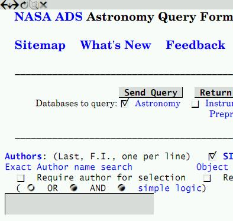

|  |
Current state of buttons skinning in Links is as follows. There are up seven button places in toolbar (you may turn some - or even all - buttons off), and there are 7 symbols in special internal font system-medium-roman-serif-vari. Their are defined in setup.h as
/* Buttonbar stuff - symbols from system-medium-roman-serif-vari font */
#define BUTTON_BACK "\x2"
#define BUTTON_HISTORY "\x3"
#define BUTTON_RELOAD "\x4"
#define BUTTON_FORWARD "\x5"
#define BUTTON_BOOKMARKS "\x6"
#define BUTTON_HOME "\x7"
#define BUTTON_STOP "\x8"
/* Some other special symbols */
#define SYMBOL_CHECKBOX_CHECKED "\x9"
#define SYMBOL_CHECKBOX_UNCHECKED "\xa"
#define SYMBOL_RADIO_DEPRESSED "\xb"
#define SYMBOL_RADIO_PRESSED "\xc"
These symbols may have different widths (font is variable), and there are no spaces in toolbar - so you need to include spaces you need in your skin.
If you change these chars in font don't forget to regenerate fonts! Type
cd graphics; ./gen; cd ..; make
Since "release" 021210 we have no more old pseudo - graphical HTML font controls - now we will draw them directly. This functionality is still very limited - they are still text objects, so their sizes are limited (at least heights - we can easily change width by adding some spaces before and after actual text), and also initial state of each such control is a filled rectangle with text inside. What we can change is background and text colors, and of course - we can draw anything ontop of it! We know all about this object surrounding - there are just other text areas, we know their colors, so we may emulate button transparency by filling some regions with it. Also, checkboxes and radio buttons currently are just a chars (see above), ans so they use only 2 colors - bg and fg of surrounding text.
So currently the task of html controls skinning is to develop its design using only 3 colors and with fixed height (just height of one char) in mind.